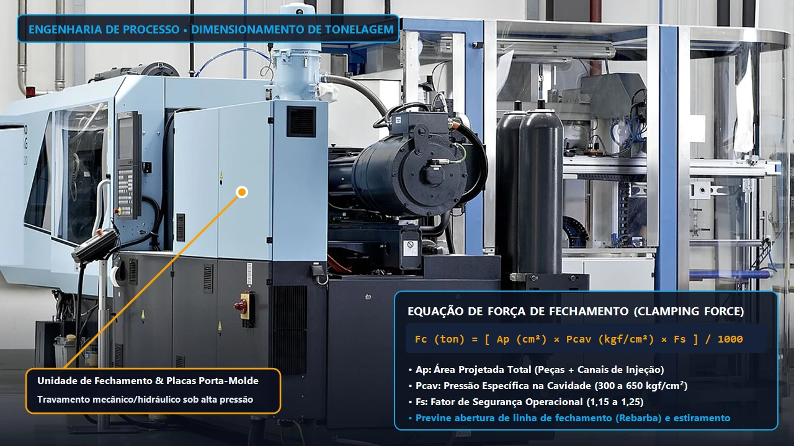

Como Calcular a Força de Fechamento e Tonelagem da Injetora com Precisão
O dimensionamento exato de como calcular a força de fechamento da injetora pela área projetada e pressão de cavidade elimina rebarbas, deflexão de placas e desgaste prematuro do molde.

Para definir como calcular a força de fechamento da injetora com exatidão industrial, multiplica-se a Área Projetada Total das cavidades e canais (A_p em cm²) pela Pressão Específica na Cavidade do polímero (P_c, variando de 250 a 800 kgf/cm²), dividindo o resultado por 1.000 e aplicando um fator de segurança operacional de 1,15 a 1,20 para obter a tonelagem mínima em toneladas-força.
Esse cálculo de engenharia garante que a pressão hidrodinâmica da resina fundida durante o pico de comutação e recalque não supere o travamento mecânico das placas da máquina. Quando o dimensionamento técnico na fabricação de moldes de injeção substitui estimativas empíricas, a indústria elimina a formação de rebarbas (flash), o esmagamento de respiros na linha de partição e o consumo excessivo de tarifa hora-máquina.
"Subdimensionar a força de fechamento em 15% gera rebarbas crônicas; superdimensionar acima de 50% provoca flambagem central nas placas e esmaga a linha de partição da ferramenta."
A Equação Canônica de Dimensionamento de Força de Fechamento
O dimensionamento exato da unidade de fechamento de uma injetora impede que a pressão hidrodinâmica do polímero fundido vença o travamento mecânico (toggle) ou hidráulico das placas durante a fase de recalque. Quando a tonelagem é subdimensionada em apenas 10% a 15%, o molde sofre microabertura elástica na linha de partição, gerando rebarbas (flash) e amassamento prematuro das colunas e travas cônicas.
Na engenharia de processos, a fórmula de cálculo padrão multiplica a Área Projetada Total (A_p) em cm² pela Pressão Específica na Cavidade (P_c) em kgf/cm², dividindo o produto por 1.000 e aplicando o fator de segurança (F_s = 1,10 a 1,20). Em ferramentas com canal frio, a área projetada do galho de alimentação deve obrigatoriamente ser somada à área das cavidades.
- Mapeamento da Área Projetada (A_p): Extraia diretamente no software CAD 3D (SolidWorks ou Siemens NX) a sombra bidimensional de todas as cavidades e canais de distribuição projetada no plano paralelo às placas da máquina.
- Seleção da Pressão na Cavidade (P_c): Defina o coeficiente pressórico conforme o índice de fluidez (MFI), a viscosidade da resina termoplástica e a relação comprimento de fluxo versus espessura de parede (L/t).
- Aplicação do Fator de Segurança (F_s): Adicione 10% para peças técnicas convencionais com câmara quente e 20% para geometrias de parede fina (t < 1,2 mm) ou resinas carregadas com fibra de vidro.
Tabela de Pressão Específica na Cavidade por Resina Termoplástica
A viscosidade do polímero determina a resistência ao escoamento dentro da cavidade. Polímeros semicristalinos de alta fluidez exigem menor pressão interna do que termoplásticos amorfos de engenharia ou compostos reforçados com 30% de fibra de vidro (GF30).
| Polímero / Resina Termoplástica | Pressão na Cavidade (P_c em kgf/cm²) | Tonelagem Prática por cm² | Exigência de Rigidez do Molde |
|---|---|---|---|
| PEAD / PEBD / Polipropileno (PP) | 250 a 350 kgf/cm² | 0,28 a 0,40 ton/cm² | Moderada (Aço P20 / DIN 1.2738) |
| Poliestireno (PS) / ABS | 350 a 500 kgf/cm² | 0,40 a 0,55 ton/cm² | Média-Alta (Aço 1.2738 ou H13) |
| Poliamida (PA6 / PA66 com 30% FV) | 500 a 650 kgf/cm² | 0,55 a 0,75 ton/cm² | Alta (Aço AISI H13 Temperado 48-52 HRC) |
| Policarbonato (PC) / PMMA / POM | 600 a 800 kgf/cm² | 0,68 a 0,90 ton/cm² | Severa (Colunas de Apoio + Aço H13/S136) |

Impacto da Relação Fluxo/Espessura (L/t) e Deflexão de Placas
Quando a razão entre o caminho de fluxo mais longo (L) e a espessura nominal da parede (t) ultrapassa 150:1, a camada congelada superficial (frozen layer) restringe a seção útil do canal. Isso obriga a unidade de injeção a elevar a pressão hidráulica específica em até 40%, aumentando proporcionalmente a força de abertura sobre o molde.
Por outro lado, alocar um molde compacto em uma injetora superdimensionada (acima de 80% da necessidade real) concentra a carga no centro das placas móveis e fixas. Esse fenômeno provoca o efeito de flambagem central (platen deflection), esmagando a linha de fechamento do molde e bloqueando os respiros de saída de gases de 0,015 mm a 0,030 mm.
Para automatizar esse cálculo instantaneamente no seu projeto, utilize nossa Calculadora de Força de Fechamento e Tonelagem de Injetora, valide o comportamento de preenchimento com nosso guia de Simulação Moldflow e Análise Reológica e conheça nossos Serviços de Injeção Plástica Terceirizada (80t a 350t).
Perguntas Frequentes sobre Cálculo de Força de Fechamento e Tonelagem
Como a área projetada de furos e gavetas laterais afeta o cálculo de tonelagem da injetora?
Os furos passantes perpendiculares ao plano de fechamento do molde devem ser subtraídos da área projetada total, pois não sofrem pressão hidrostática axial. Entretanto, quando o molde possui gavetas mecânicas (slides) acionadas por pinos inclinados e cunhas de travamento, a área projetada lateral da gaveta exige um acréscimo de 15% a 25% na força de fechamento para impedir o recuo da cunha durante a injeção.
Qual a diferença de força de fechamento entre molde com câmara quente e canal frio?
Um molde de injeção com canal frio exige de 15% a 35% mais força de fechamento do que uma ferramenta equivalente equipada com sistema de câmara quente. Isso ocorre porque o galho de alimentação solidificado (sprue e runners) possui área projetada exposta à alta pressão de recalque na linha de partição, somando-se diretamente à área das cavidades.
O que acontece se eu operar um molde pequeno em uma injetora de tonelagem muito alta?
Operar um molde cuja área de base cobre menos de 40% da distância entre colunas sob força de fechamento elevada provoca a deflexão elástica central das placas da injetora (efeito de embarrigamento). Essa deformação esmaga as faces de fechamento da cavidade em aço P20 ou H13, obstrui os respiros de saída de gases e causa trincas por fadiga nas colunas de guia.
Como a espessura de parede fina altera a pressão específica na cavidade?
Em componentes técnicos com espessura de parede inferior a 1,2 mm ou relação comprimento de fluxo por espessura (L/t) acima de 150, o resfriamento instantâneo das camadas superficiais reduz o canal de fluxo efetivo. Para vencer a viscosidade do polímero antes do congelamento, a pressão específica na cavidade sobe de 400 kgf/cm² para até 850 kgf/cm², exigindo injetoras de alta performance.
Conclusão Estratégica para Engenharia e Suprimentos B2B
Dimensionar a tonelagem da injetora com precisão matemática entre 70% e 85% da capacidade nominal da máquina evita rebarbas nas peças plásticas, preserva a linha de fechamento do molde e reduz o custo hora-máquina industrial.